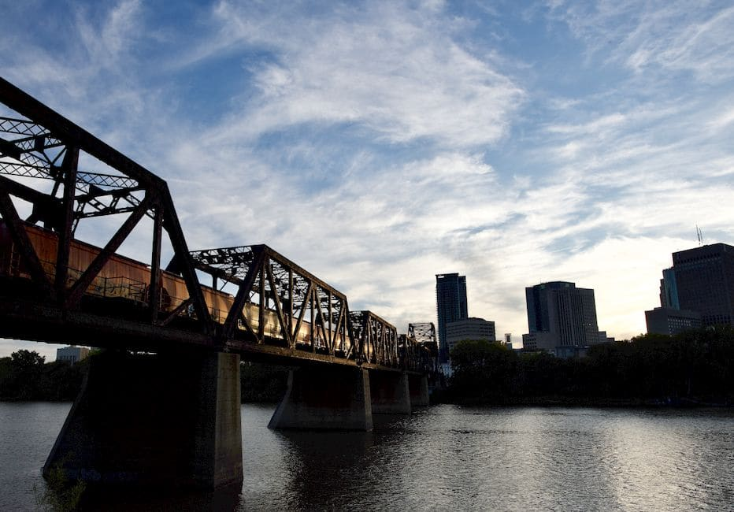

Every spring and fall across Winnipeg — from the mature elm canopies in Wolseley to the overgrown backyards of St. Vital and the windswept lots of Transcona — homeowners face the same question: can I handle this tree myself, or do I need to call a professional tree service? Winnipeg's climate is hard on trees. Brutal freeze-thaw cycles, ice storms, and summer windstorms regularly split limbs, uproot trunks, and leave behind dangerous deadwood. Knowing when DIY makes sense and when it becomes genuinely dangerous could save you thousands of dollars — or prevent a serious injury.

What "Tree Service" Actually Covers in Winnipeg
Tree service is a broad term. In a Winnipeg context it typically includes pruning and trimming, full tree removal, stump grinding, emergency storm cleanup, and disease assessment. Each of these tasks carries a very different risk profile — and that risk profile is what should drive your DIY-vs-hire decision, not simply the cost of a quote.
What You Can Reasonably Do Yourself
Light Pruning and Small Shrub Trimming
If you have a young tree under roughly five metres, a fruit tree in your River Heights backyard, or ornamental shrubs that need shaping, this is reasonable DIY territory. Use clean, sharp tools, prune just outside the branch collar, and do your pruning in late winter before new growth begins — a timing that also helps limit the spread of disease in Winnipeg's urban forest. Dispose of green waste according to your city collection schedule, and never leave piles of brush sitting for long periods, as this can attract pests.
Clearing Fallen Branches After a Storm
After the kind of summer storms that regularly roll through Winnipeg's North End or East Kildonan, picking up branches that have already fallen to the ground is safe work most homeowners can manage. Stack the brush, rent a chipper if the volume warrants it, and keep the area clear of foot traffic. The line is crossed the moment you look up and see broken limbs hanging in the canopy — those are called "widow-makers" for a reason, and they require professional removal.
When You Should Always Hire a Professional Tree Service in Winnipeg
Large Tree Removal
Any tree taller than about seven or eight metres — common with the large native ash, Manitoba maple, and elm trees found throughout older Winnipeg neighbourhoods like Armstrong's Point, Crescentwood, and Old St. Vital — should be removed by a licensed, insured tree service. Felling a large tree requires calculating the fall zone, using proper rigging to section the tree down in pieces, and managing the unexpected. A tree that falls the wrong way in a Winnipeg backyard can take out a fence, a garage, a power line, or a neighbour's property. The liability exposure alone makes DIY a poor choice.
Anything Near Power Lines
Manitoba Hydro infrastructure runs through almost every residential block in Winnipeg. Work near power lines is not a grey area — it must be handled by qualified professionals. Do not attempt to prune or remove branches that are touching or approaching overhead lines.
Diseased Elm Trees
Winnipeg has the largest remaining urban elm canopy in North America, and Dutch elm disease is an ongoing threat. If you suspect your elm is infected, do not attempt to prune it yourself. Improper pruning spreads the disease through beetle activity, and there are strict seasonal pruning windows enforced in Winnipeg. The Manitoba Government — Dutch Elm Disease Program outlines the regulations and the approved pruning calendar. A certified arborist who understands these rules is essential — see our arborist consultation service for a proper disease assessment before touching an elm showing signs of decline.
Stump Grinding
Renting a stump grinder sounds straightforward, but these machines are heavy, powerful, and unforgiving on Winnipeg's clay-heavy soil, where buried rocks and frost heaves are common. A mishandled grinder can throw debris at high speed or damage underground utility lines. Utility locates (call before you dig) are mandatory, and operating the machine safely requires experience.
DIY vs Professional Tree Service: Cost Comparison
| Task | DIY Estimated Cost | Professional Cost (Winnipeg) | Recommended Approach |
|---|---|---|---|
| Small tree pruning (under 5m) | $50–$150 (tools/rental) | $200–$400 | DIY acceptable |
| Large tree removal (over 8m) | Not recommended | $800–$2,500+ | Hire a professional |
| Storm debris cleanup (fallen branches) | $0–$100 (disposal fees) | $150–$500 | DIY for ground-level debris only |
| Stump grinding | $150–$300 (rental) | $200–$500 | Hire a professional |
| Dutch elm disease assessment | Not applicable | $100–$250 | Always hire a certified arborist |
Insurance and Liability: A Winnipeg-Specific Concern
Before you attempt any significant tree work, check your homeowner's insurance policy. Many Manitoba insurers will deny a damage claim if the homeowner was performing tree work without appropriate qualifications and the work contributed to property damage. A professional tree service in Winnipeg should carry both general liability insurance and workers' compensation coverage — always ask for proof before work begins. It is also worth noting that storm damage affecting both trees and your home's exterior can compound quickly; if falling branches have affected your gutters, consulting a specialist in Eavestrough Winnipeg alongside your tree service call is a smart way to assess the full scope of damage in one go.
How to Choose a Tree Service in Winnipeg
Look for companies whose crew includes or is supervised by an ISA Certified Arborist. Ask specifically whether they carry liability insurance and WCB coverage, whether they perform utility locates before any digging, and whether they are familiar with Winnipeg's Dutch elm disease pruning restrictions. Get at least two written quotes and be wary of door-to-door solicitations following a storm — high-pressure "storm chasers" are a real issue after major weather events in Winnipeg.
Need a Trusted Tree Service in Winnipeg?
Get a fast, no-obligation quote from an insured local team that knows Winnipeg's trees, bylaws, and climate inside and out.
Get My Free Quote